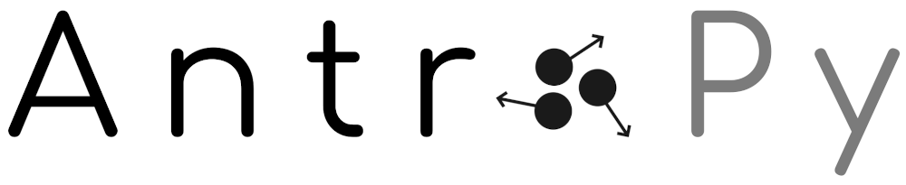

AntroPy is a Python 3 package providing several time-efficient algorithms for computing the complexity of time-series. It can be used for example to extract features from EEG signals.
Installation#
AntroPy is a Python 3 package and is currently tested for Python 3.10+.
Dependencies#
The main dependencies of AntroPy are:
NumPy >= 1.22.4
SciPy >= 1.8.0
scikit-learn >= 1.2.0
Numba >= 0.57
User installation#
AntroPy can be easily installed using uv
uv pip install antropy
pip
pip install antropy
or conda
conda install -c conda-forge antropy
Development#
To build and install from source, clone this repository and install in editable mode with uv
git clone https://github.com/raphaelvallat/antropy.git
cd antropy
uv pip install --group=test --editable .
# test the package
pytest --verbose
Functions#
Entropy
import numpy as np
import antropy as ant
np.random.seed(1234567)
x = np.random.normal(size=3000)
# Permutation entropy
print(ant.perm_entropy(x, normalize=True))
# Spectral entropy
print(ant.spectral_entropy(x, sf=100, method='welch', normalize=True))
# Singular value decomposition entropy
print(ant.svd_entropy(x, normalize=True))
# Approximate entropy
print(ant.app_entropy(x))
# Sample entropy
print(ant.sample_entropy(x))
# Hjorth mobility and complexity
print(ant.hjorth_params(x))
# Number of zero-crossings
print(ant.num_zerocross(x))
# Lempel-Ziv complexity
print(ant.lziv_complexity('01111000011001', normalize=True))
0.9995371694290871
0.9940882825422431
0.9999110978316078
2.015221318528564
2.198595813245399
(1.4313385010057378, 1.215335712274099)
1531
1.3597696150205727
Fractal dimension
# Petrosian fractal dimension
print(ant.petrosian_fd(x))
# Katz fractal dimension
print(ant.katz_fd(x))
# Higuchi fractal dimension
print(ant.higuchi_fd(x))
# Detrended fluctuation analysis
print(ant.detrended_fluctuation(x))
1.0310643385753608
5.954272156665926
2.005040632258251
0.47903505674073327
Development#
AntroPy was created and is maintained by Raphael Vallat. Contributions are more than welcome so feel free to contact me, open an issue or submit a pull request!
To see the code or report a bug, please visit the GitHub repository.
Note that this program is provided with NO WARRANTY OF ANY KIND. Always double check the results.
Acknowledgement#
Several functions of AntroPy were adapted from:
All the credit goes to the authors of these excellent packages.